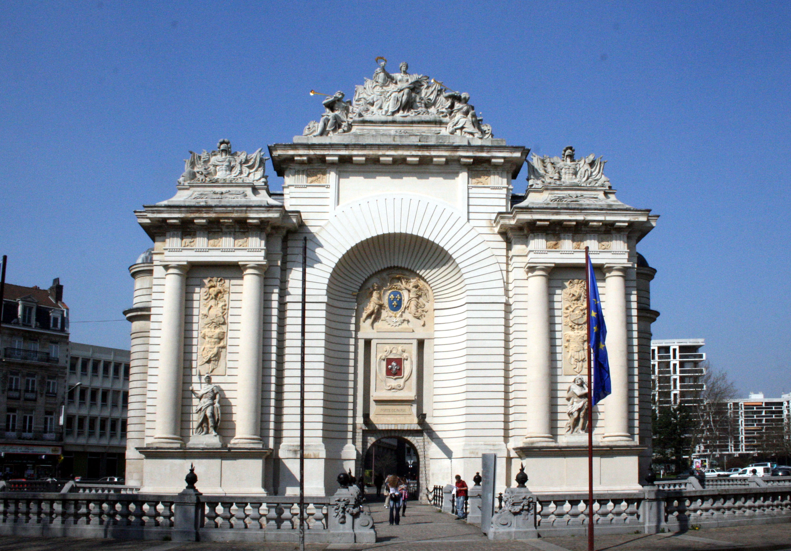

CityLoop Quest Lille


L’histoire de Lille avance par changements de souveraineté et par transformations de fonction. La ville appartient d’abord à l’espace flamand, un monde de foires, de draps, de villes marchandes et de rapports étroits avec les Pays-Bas. Cette première identité explique le goût des façades travaillées, la culture du commerce et l’importance des places publiques. Lille est une ville du Nord avant d’être une ville française au sens politique du terme.
La période bourguignonne et habsbourgeoise donne à la cité une dimension européenne. Elle se trouve dans un espace où circulent les marchandises, les artistes, les soldats et les administrateurs. Les influences ne viennent pas d’une seule capitale : elles passent par Bruges, Gand, Bruxelles, Anvers, puis Madrid et Vienne. Cette histoire explique la richesse visuelle du centre, où les références flamandes et espagnoles restent perceptibles dans le vocabulaire architectural.
Le grand basculement se produit au XVIIe siècle, lorsque Louis XIV prend Lille en 1667. La ville devient française et stratégique. Vauban y construit une citadelle considérée comme l’une de ses réalisations majeures, tandis que la Porte de Paris célèbre l’entrée de Lille dans le royaume. À partir de là, la ville n’est plus seulement marchande : elle devient place forte, verrou militaire et symbole de frontière. Le paysage urbain se militarise, mais gagne aussi en monumentalité.
Au XIXe siècle, l’industrie transforme Lille en profondeur. Les filatures, les usines, les canaux, les gares et les quartiers ouvriers font entrer la ville dans l’âge de la production massive. Cette puissance industrielle crée une grande richesse, mais aussi des contrastes sociaux très marqués. La métropole actuelle garde la mémoire de cette époque dans ses bâtiments reconvertis, ses friches réinventées et ses villes voisines comme Roubaix et Tourcoing, liées à la grande histoire textile.
Le XXe siècle apporte les guerres, les reconstructions et les mutations économiques. Lille souffre des occupations, puis cherche un nouveau rôle après le déclin industriel. L’arrivée du TGV, le développement d’Euralille, la mise en valeur du patrimoine et le dynamisme universitaire changent son image. Pour le visiteur, le charme de Lille vient de cette longue succession : ville flamande, ville fortifiée, ville industrielle, ville européenne. Chaque promenade traverse plusieurs siècles à la fois.
Lire ces grandes périodes permet de mieux comprendre la sensation particulière que donne Lille : une ville flamande par ses racines, française par son destin politique, industrielle par son énergie moderne et européenne par ses connexions actuelles. Chaque époque a ajouté une couche sans effacer complètement la précédente. En marchant, cherchez ces superpositions : une porte triomphale, une façade marchande, un bâtiment reconverti, une gare, un musée ou une place animée peuvent appartenir à des siècles différents tout en dialoguant dans le même décor. Cette superposition explique pourquoi Lille ne se livre pas immédiatement. Certaines villes affichent une période dominante ; Lille préfère les coutures visibles entre les siècles. La ville médiévale apparaît dans la forme des rues et dans la mémoire hospitalière, la ville de Louis XIV dans les portes, les tracés militaires et l’idée de frontière, la ville industrielle dans les bâtiments reconvertis et les quartiers populaires, la métropole contemporaine dans les gares, Euralille et les connexions européennes. Une visite attentive consiste donc à ne pas choisir une seule époque comme décor principal. Il faut accepter que la ville parle plusieurs langues historiques à la fois. C’est ce mélange qui donne au promeneur cette impression de densité : derrière une terrasse actuelle, il peut y avoir une ancienne logique marchande ; derrière une gare moderne, une stratégie de réseau ; derrière un musée, une ambition de transmission. Cette lecture par couches donne aussi du relief aux distances : quelques centaines de mètres peuvent séparer une trace médiévale, un symbole monarchique, un équipement industriel et un geste urbain contemporain. Lille n’est donc jamais seulement ancienne ou moderne ; elle est une ville de passages successifs, où chaque période a dû composer avec les précédentes.